Ein neuer Pharao
Die millionen Tage
Mit großer Kraft weht der Wind aus dem Süden herauf. Staub wirbelt auf, rötet die Luft, verschleiert die Scheibe der Sonne. Der Lotus beugt sich und das Schilfrohr neigt das Haupt. Wellen türmen sich auf, in den ewigen Fluten des Nil. Groß ist die Kraft des Sturms, sein Brüllen überzieht das Land. Doch die Menschen darin sind stumm. So wie die Fluten des Nil steigen und fallen, so hat auch das Land sich gewandelt. Es blühte auf, als mächtig der Schlaf noch war der anderen Völker, nicht beschenkt von netzenden Leben des Flusses. So verfiel es aber auch zermalmt von Krieg und Hunger, von Seuchen und Streit. Und das Land ward dunkel von Asche und Rauch.

Doch aus den Glimmenden Funken erhob sich das Land ein ums andere Mal und trieb neue Blüten und wandelte sein Gesicht wie auch die Zeit sich gewandelt. Durchweg aber erkannte man das Land, das der große Fluss benetzt, das von Lotus und Papyrus seine Kronen gebar. Sein Ka überdauerte und die Linien seiner Herrscher, von den unvordenklichen Zeiten der Einigung von Ober- und Unterägypten bis zu jenen jungen Eroberer Alexander, überdauerten mit ihm. Doch nun muss das Land sich erneut wandeln. Denn Alexander ist nicht mehr und ein neuer Herrscher nimmt Platz auf den ewigen Thron der ägyptischen Könige, welcher nun schon eine Million Tage und mehr gesehen hat unter dem Auge des Re. Was wird nun aus dem Land der göttlichen Zeichen? Wird eine neue Dynastie dem Volk Glück und Segen bescheren und die Maat für viele Generationen erhalten, oder wird der Fremde Herr seinen Schatten werfen über das Land am Ufer des großen Stromes und Ägypten im Staub der Wüste zestreuen.

Ptolemaios
Der Ersatz des Demetrios. Der unscheinbare und schlichtende. Der Vorkoster und Leibwächter. Und erst sehr spät auch Heerführer. Er war nie die erste Wahl Alexanders gewesen, das war nur zu offensichtlich. Zwischen all den jugendlichen Hetairoi zu denen er erst mit knapp vierzig Jahren gezählt wurde, wirkte er eher phlegmatisch. Lediglich Antigonos und Antipatros zählten mehr an Jahren, waren dafür aber auch schon unter Alexanders Vater Phillipp zu mächtigen Heerführern gekürt worden.Doch hatte auch er sich verdient gemacht. Er war es schließlich, der im Kampf gegen die Aspasier in Indien persönlich in die gegnerischen Reihen vorstieß, an seiner Seite nur ein paar Dutzend Hypaspisten und den Fürsten dieses fernen Reiches mit seinem Schwert durchbohrte. Die Wunde, die ihm dieser mit einem breiten Speer in seine rechte Hüfte bohrte, schmerzte ihm bei Zeiten noch immer. Ja er war nie derjenige, der die Lobgesänge erntete, doch war er ein enger Freund Alexanders. Diese Freundschaft hatte sich durchaus ausgezahlt, war es doch Alexander selbst, der ihm dazu riet nach seiner vor Harmatelia erlittenen Vergiftung das Arlantiskraut aus seinem persönlichen Vorrat in mit Wasser verdünnter Form zu sich zu nehmen, welches seine Leiden nach kaum einem Tag beendete.
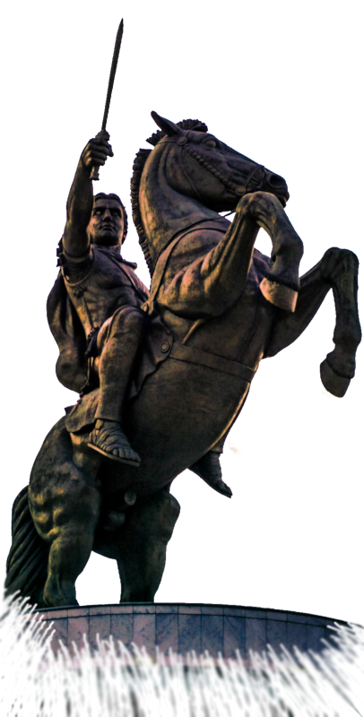Das er jetzt ein eigenes Reich besaß, und nicht etwa irgendein Reich, nein, hierbei handelte es sich schließlich um Ägypten, dessen Geschichte so alt zu sein scheint wie die zeit selbst, lag zum großen Teil an den Machenschaften des Perdikkas. Denn ohne die durch dessen Machtansprüche losgetretene Wirren, hätte er die Satrapie Ägypten wohl nie erhalten. Doch nun war er hier. Der Schlichter und Geduldige. Lange Zeit hatte er wahrlich auf seine große Chance warten müssen, aber als sie dann kam, hatte er zugepackt. Mit beiden Händen und mit Zähnen und Klauen und seinen Preis, das reiche Land am Nil nicht wieder losgelassen. Aber was sollte er nun tun mit dieser Beute. Zu glanzvoll war die neue Hauptstadt Alexandria, benannt und gegründet von seinem alten Freund vor so wenigen Jahren, doch schon gewaltig an ausmaßen, als dass man ihr einfach den Rücken kehren konnte. Doch war Memphis oder Theben der traditionellere Sitz der Herrscher dieses Landes. Diese hatten aber auch des Öfteren ihre Residenzen gewechselt, dachte er sich. Also warum nicht eine neue Metropole für eine neue Dynastie?
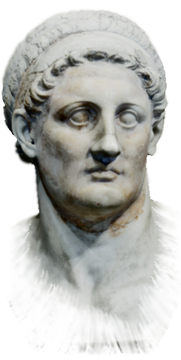Doch gab es da ja noch andere Fragen. Sollte seine Familie herrschen wie die Makedonen es getan hatten, oder aber sich den Gepflogenheiten des Landes unterwerfen. Letzteres tat auch Alexander nur zu gerne und Ptolomaios wusste, dass ihm dies nicht nur Freunde eingebracht hatte. Besonders die aus dem östlichen Mittelmeer hinzugezogenen hellenischen Händler und Adelsfamilien würden eine Unterwerfung unter die alten Werte dieses Landes wohl verdammen und seiner Dynastie den Rücken kehren. Doch die Millionen von einfachen Menschen in diesem Land hätte er dabei wohl hinter sich. Auch die immer noch mächtigen Priester des Amun-Re und der anderen Gottheiten würden eine traditionellere Regierung mit wohlwollen unterstützen. Es hieß also, bei dieser Option nur die hinzugezogenen Griechen im Auge zu behalten und da diese sich vornehmlich in der Umgebung Alexandrias angesiedelt hatten, konnte er sie auch gleich von einem neuen Herrschersitz dort im Auge behalten. Somit hätte er sich zumindest aus seiner Sicht ein weitaus bequemeres Nest gemacht, als wenn er vorgehabt hätte, sich mit dem Volk und den alteingesessenen Eliten überall im Lande anzulegen. Ja es war wohl wesentlich angenehmer, auf lange Sicht gesehen, sich mit den uralten Traditionen dieses Landes vertraut zu machen und manche davon hatten gewiss auch ihre Vorteile, da war sich Ptolomaios sicher.

Das schöne Fest vom Wüstental
So steht es nun im Land des großen Stromes. Ptolemaios hat die Throne der Gottheiten erhalten und mit ihnen lange Jahre der Herrschaft und das Land Ägypten. Er hat geschworen die Maat aufrechtzuerhalten und hat den Ka des Horus in sich aufgenommen. Wiedergeboren als Sohn des Re, als vollkommener Gott, Herr beider Länder von der Binse und der Biene soll er als neuer Pharao herrschen. Mit der Krönung kommen die Pflichten des Herrschers. Und so kann nun zum ersten Mal in fast siebzig Jahren das Wüstentalfest in Theben, welches die Bauern und Priester gleichermaßen begehen, unter den Augen des Pharaos wie von der Tradition gefordert stattfinden. Endlich kann Amun-Re wieder in einer festlichen Prozession durch die Stadt zu den Tempeln getragen werden. Im Laufe des Festes wird dann Amun, der König der Götter und Gott der Könige, mit großem Gefolge in die Stadt der Toten ziehen. Und noch bevor die Himmelsgöttin Nut die Sonne am Abend wieder verschluckt, werden sich die Gräber im Westen Thebens öffnen. Werden Gelächter und Gesang, der Geruch feiner Speisen sowie unzähliger Liter Wein aus den Häusern der Toten aufsteigen. Wird im religiösen Zentrum Ägyptens das Diesseits scheinbar mit dem Jenseits verschmelzen. Denn auf der anderen Flussseite, im Land der untergehenden Sonne, beginnt das Reich der Toten, denn jenseits der Ebene des Niltals liegen die Tempel verstorbener Pharaonen sowie zahllose Gräber. Hier, vor den Kalksteinbergen am Rand der Wüste, erheben sich die Tempel der Könige. In diesen Millionenjahrhäusern huldigen die Pharaonen sich selbst und den Göttern, auf dass sie ihnen ewiges Leben schenken mögen. Nach ihrem Tod werden die Herrscher dann selbst zu Gottheiten und fortan in den Tempeln von Priestern mit Opfergaben versorgt. Die Gebeine der Gottkönige selbst aber ruhen in einer versteckten Senke. Pharao Thutmosis I. hatte einst aus Angst vor Räubern seine Grabstätte in den Felsen dieser leicht zu bewachenden Schlucht schlagen lassen. Seither wurden alle Pharaonengräber in diesem Tal der Könige angelegt. Thebens Beamte nutzen die Hänge zwischen diesen Ruhestätten und den Königstempeln als Friedhof. Vor allem hohe Staatsdiener wählen Lagen mit Blick auf die Millionenjahrhäuser und den heiligen Bezirk des Reichsgottes auf der anderen Flussseite.
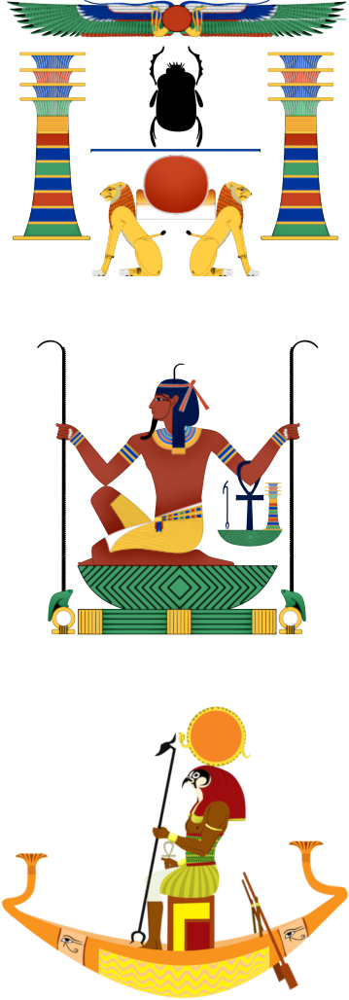An diesem Tag des Festes nun zieht Amun-Re mit seinem Gefolge aus, um die verstorbenen Pharaonen zu besuchen und ihnen durch seine Gegenwart neue Kraft für das jenseitige Leben zu spenden. Und während die Reise des Reichsgottes für das Volk wohl nur ein großes Spektakel ist, feiern die Angehörigen eines Verstorbenen, der es sich leisten konnte, im Westen begraben zu sein, mit ihrem Toten das Schöne Fest vom Wüstental. Tagelang bereiten sich die Menschen Thebens auf die Feier vor. Tänzerinnen werden verpflichtet, Matten, Schemel, Stühle und Tische in die Totenstadt geschafft, die Gräber mit Blumen und Fackeln bestückt und große Mengen Essen zubereitet.
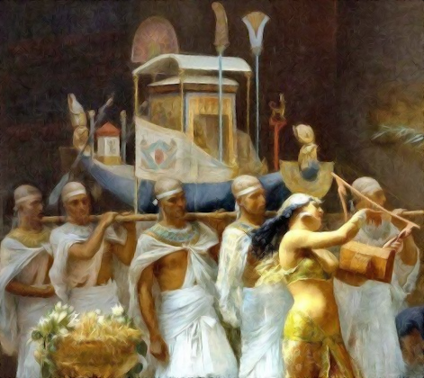Diener füllen Korb um Korb mit Früchten und honigsüßem Kuchen aus Erdmandeln, schlachten Enten, Gänse, Wachteln, Tauben, Schafe, Schweine und Rinder, schleppen Brennholz von Vorratslagern auf den Dächern hinunter in die offenen Küchen und Innenhöfe. Dort bereiten Köche über dem Feuer Fisch, Fleisch und Gemüse zu. Der Geruch von Erbsen, Linsen, Zwiebeln, Knoblauch und Kräutern zieht durch die Häuser, es duftet nach frischem Brot. Brauer liefern den Hausherren Bier, hergestellt aus mit Datteln und Wasser vergorenen Braubroten. Diener schaffen aus den Kellern Wein herbei, den die Menschen bei Festen in großen Mengen trinken und den Göttern opfern, der aber auch als Heilmittel gilt und bei allerlei körperlichen Gebrechen geschluckt wird. Auf vielen Krügen ist verzeichnet, wann und auf welchem Gut der Wein gekeltert und abgefüllt wurde.
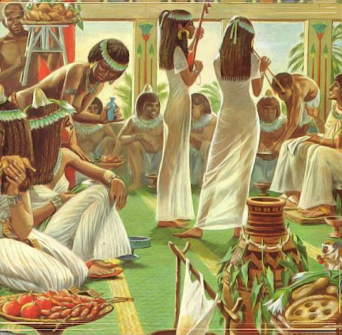Theben, am frühen Morgen nach Neumond. Fahnen wehen über dem großen Tor im Westen des Amun-Tempels, davor blitzen, den Sonnenstrahlen nachempfunden, golden die Spitzen von monumentalen Obelisken auf. Von überall her strömen Menschen herbei. Oberster Herr des Kultes ist der Pharao, alle anderen Gottesdiener handeln nur als seine Stellvertreter. Den höchsten Rang unter ihnen nimmt an jedem Tempel der Hohepriester ein. Türöffner des Himmels wird in Theben der Hohepriester des Amun genannt. Große Bedeutung haben auch die Vorlesepriester, die während der Zeremonien die heiligen Texte rezitieren.
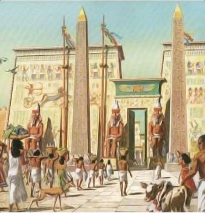Jubel brandet auf, als die Prozession im geöffneten Tempeltor erscheint. Hinter der Barke schreitet der irdische Sohn des Reichsgottes. Pharao Ptolemaios I., der zu dem Totenfest eigens aus Alexandria angereist ist. Wedelträger begleiten den König und fächeln ihm mit Straußenfedern an langen Stangen kühle Luft zu. Die Priesterschaft des Amun sowie Abgeordnete anderer Tempel schließen sich dem Zug an. Langsam bewegt er sich vom Tempeltor in Richtung Nilufer. Unzählige Menschen säumen den Weg. Gemächlich legt der Festzug den wenige Hundert Meter langen Weg bis zum Flussufer zurück, entlang einer eigens für diesen Zweck angelegten Prozessionsstraße, die das Haus des Gottes mit dem Anleger des Tempels verbindet. Männer und Frauen drängen zur Barke des Amun, sie haben mit Gebeten beschriebene Tonscherben dabei, die sie dem vorbeiziehenden Gott in den Weg legen, als Ausdruck tiefster Frömmigkeit. Am Flussufer angekommen, laden Priester das vergoldete Götterschiff auf eine größere Barke, auf ein echtes Boot aus Zedernholz. Dann setzt der Gott seine Reise auf dem Nil fort, im Schlepptau des königlichen Schiffes und gefolgt von unzähligen kleinen Booten und Kähnen.
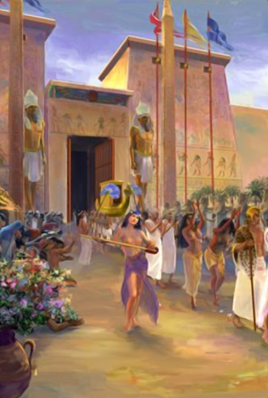Die Barke des Amun nähert sich langsam dem Bassin vor dem Tempel der Hatschepsut. Er ist der größte Bau im heiligen Wüstental. Dort wird Amun das erste Mal einkehren auf seiner alljährlichen Reise zu den Tempeln der vergöttlichten Pharaonen. Priester schultern die Barke mit der im Schrein verborgenen Statue des Reichsgottes. Das letzte Stück von Amuns Weg führt über eine 37 Meter breite, von mächtigen Sphingen gesäumte Prachtstraße. Dann geht es die erste Rampe hinauf. Die Gläubigen müssen hier zurückbleiben. Nach einiger Zeit sehen sie, wie von der obersten Terrasse dichter Rauch aufsteigt. Das Brandopfer für Amun hat begonnen, jenes Opfer, von dem die Menschen hoffen, dass es ihre verstorbenen Könige stärken und auch ihnen selbst Heil bringen möge. Die Träger haben den Reichsgott in eine Kapelle tief im Inneren des Felsens gebracht. Auf einem Altar im Opferhof entzündet Pharao Ptolemaios I. das Fleisch frisch geschlachteter Mastochsen und Gänse. Priester reichen ihm Schalen mit den besten Stücken, schütten Myrrhe und Weihrauch in das Feuer. Andere rezitieren heilige Sprüche, auf dass das Leben der gottgewordenen Hatschepsut im Jenseits ewig fortdauern möge.
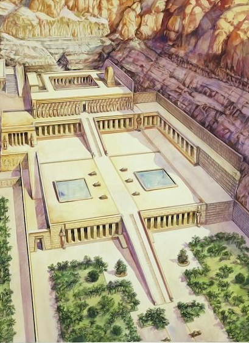Doch irgendwann verlöschen die letzten Flammen des Brandopfers, sind die Kulthandlungen im Tempel für diesen Abend beendet. Nun beginnt für die freien Männer und Frauen der schönste Teil des Festes, die Feier in den Gräbern ihrer Angehörigen. Priester und Beamte machen sich auf in Richtung der Gräberhügel. Sie tragen mit Blütengirlanden umwickelte Buketts aus Papyrusstauden. Ein Tribut an die Verstorbenen, ein Zeichen des Lebens in der Gräberstadt, die sich mit Sängerinnen und immer mehr festlich gekleideten Menschen füllt. Auch die Toten sind nun anwesend. Denn der Ka, die unsterbliche Lebenskraft eines jeden Menschen oder Verstorbenen, verlässt nach dem Glauben der Feiernden den einbalsamierten Körper in der unterirdischen, mit Geröll und Sand verschlossenen Sargkammer, um die Gaben entgegenzunehmen. Ausrichter und Gäste erheben ihre Schalen und Becher mit Wein. Für deinen Ka. Trinke den schönen Rauschtrunk! Feiere den schönen Tag!", prosten die Anwesenden dem Verstorbenen zu. Musik erklingt während des Banketts, ein Harfenspieler trägt Lieder vor, Tänzerinnen wiegen sich zu den Klängen von Lauten und Oboen.
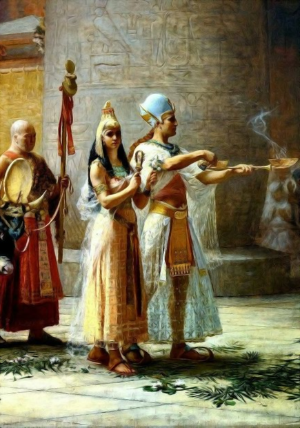Vermutlich erst im Morgengrauen verabschieden sich die Hinterbliebenen von den Toten und kehren heim. Das Schöne Fest vom Wüstental indes geht noch tagelang weiter. Sobald am Morgen die Nachtwachen im Millionenjahrhaus der Hatschepsut ihre Fackeln gelöscht haben, setzt der Reichsgott seine Reise durch die Totenstadt fort. Nun besucht er einen Königstempel nach dem anderen, bis er bei dem des noch lebenden Herrschers Ptolemaios I. angekommen ist, welcher in ziemlicher Eile in den letzten Monaten gebaut worden war. Erst danach wird Amun wieder den Nil überqueren und in der Dunkelheit seines großen Heiligtums auf dem Ostufer verschwinden. Und damit wird das Fest des Amun-Re enden und der Alltag in Theben wieder einkehren. Bis die Tore des großen Tempels sich erneut öffnen werden, im nächsten Jahr am Tage nach dem ersten Neumond im Schemu II, und das schöne Fest vom Wüstental wieder Zehntausende Menschen und ihre Ahnen zur größten Feier in Ägypten zusammenführen wird.
 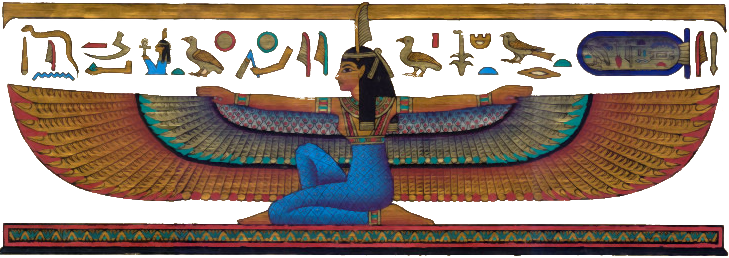
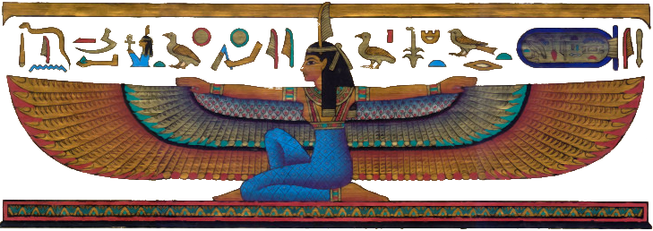